Draw a PieDonut plot
PieDonut(data, mapping, start = 0, addPieLabel = TRUE, addDonutLabel = TRUE, showRatioDonut = TRUE, showRatioPie = TRUE, ratioByGroup = TRUE, showRatioThreshold = 0.02, labelposition = 2, labelpositionThreshold = 0.1, r0 = 0.3, r1 = 1, r2 = 1.2, explode = NULL, selected = NULL, explodePos = 0.1, color = "white", pieAlpha = 0.8, donutAlpha = 1, maxx = NULL, showPieName = TRUE, showDonutName = FALSE, title = NULL, pieLabelSize = 4, donutLabelSize = 3, titlesize = 5, explodePie = TRUE, explodeDonut = FALSE, use.label = TRUE, use.labels = TRUE)
Arguments
| data | A data.frame |
|---|---|
| mapping | Set of aesthetic mappings created by aes or aes_. |
| start | offset of starting point from 12 o'clock in radians |
| addPieLabel | A logical value. If TRUE, labels are added to the Pies |
| addDonutLabel | A logical value. If TRUE, labels are added to the Donuts |
| showRatioDonut | A logical value. If TRUE, ratios are added to the DonutLabels |
| showRatioPie | A logical value. If TRUE, ratios are added to the PieLabels |
| ratioByGroup | A logical value. If TRUE, ratios ara calculated per group |
| showRatioThreshold | An integer. Threshold to show label as a ratio of total. default value is 0.02. |
| labelposition | A number indicating the label position |
| labelpositionThreshold | label position threshold. Default value is 0.1. |
| r0 | Integer. start point of pie |
| r1 | Integer. end point of pie |
| r2 | Integer. end point of donut |
| explode | pies to explode |
| selected | donuts to explode |
| explodePos | explode position |
| color | color |
| pieAlpha | transparency of pie |
| donutAlpha | transparency of pie |
| maxx | maximum position of plot |
| showPieName | logical. Whether or not show Pie Name |
| showDonutName | logical. Whether or not show Pie Name |
| title | title of plot |
| pieLabelSize | integer. Pie label size |
| donutLabelSize | integer. Donut label size |
| titlesize | integer. Title size |
| explodePie | Logical. Whether or not explode pies |
| explodeDonut | Logical. Whether or not explode donuts |
| use.label | Logical. Whether or not use column label in case of labelled data |
| use.labels | Logical. Whether or not use value labels in case of labelled data |
Examples
require(moonBook)#>require(ggplot2) browser=c("MSIE","Firefox","Chrome","Safari","Opera") share=c(50,21.9,10.8,6.5,1.8) df=data.frame(browser,share) PieDonut(df,aes(browser,count=share),r0=0.7,start=3*pi/2,labelpositionThreshold=0.1)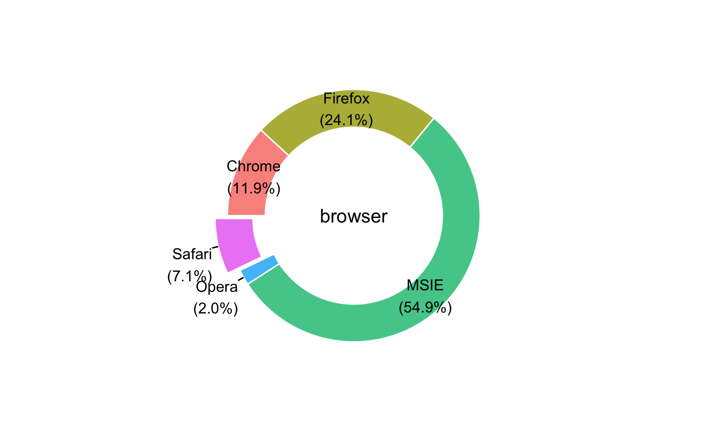#> Warning: Ignoring unknown aesthetics: explode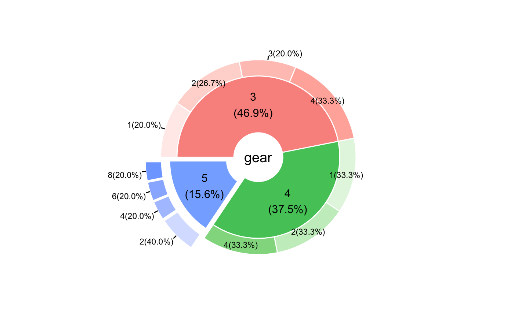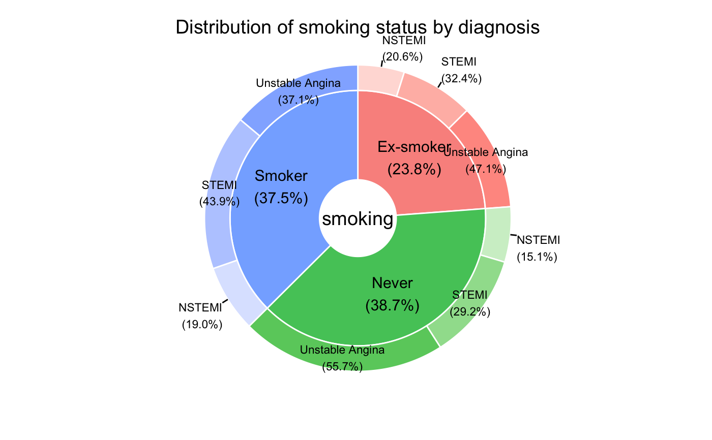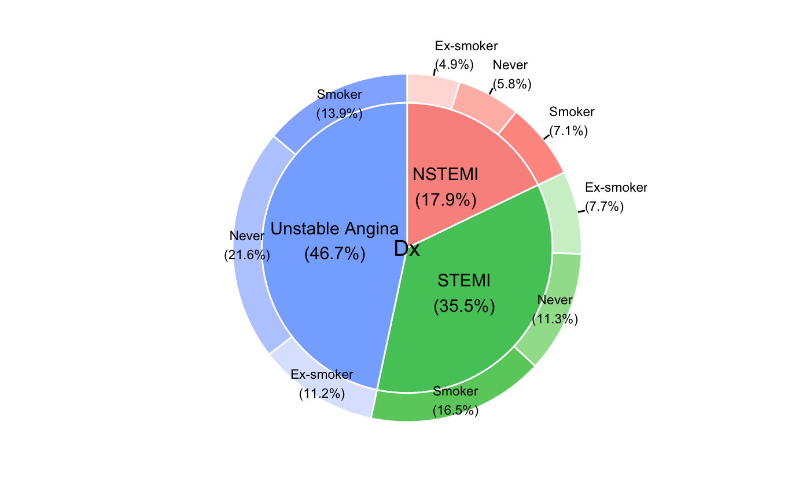#> Warning: Ignoring unknown aesthetics: explode#> Warning: Ignoring unknown aesthetics: explode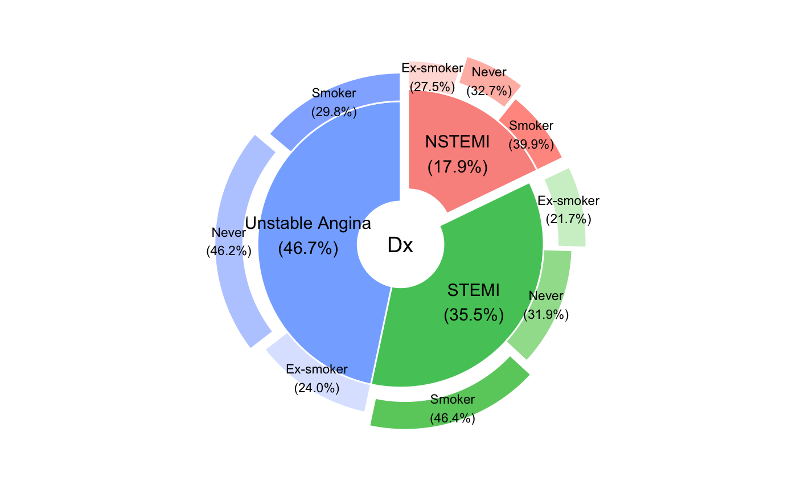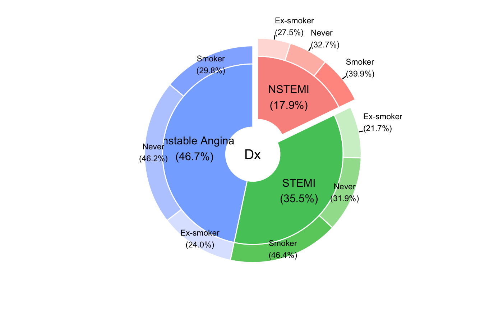#> Warning: Ignoring unknown aesthetics: explode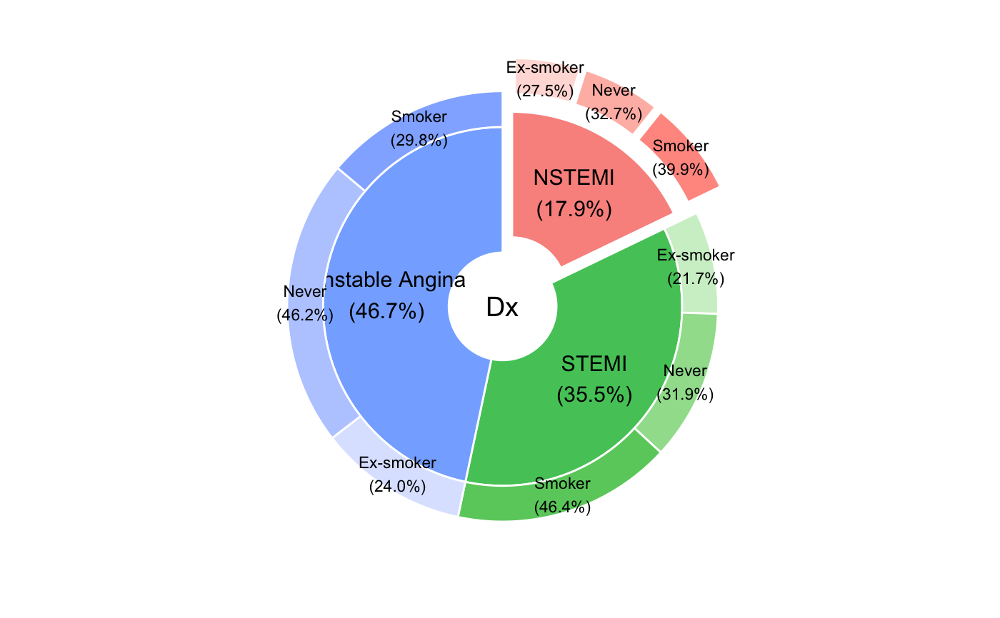#> Warning: Ignoring unknown aesthetics: explode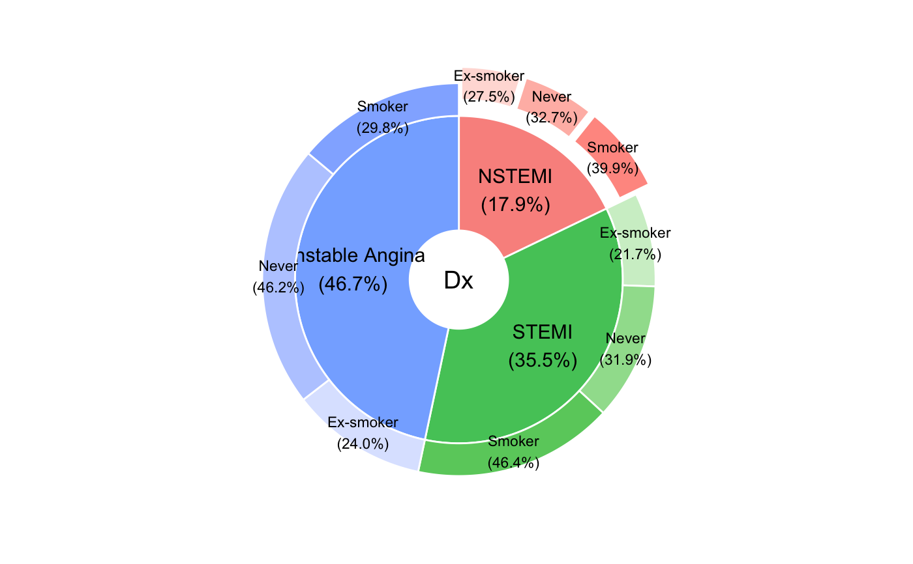#> Warning: Ignoring unknown aesthetics: explode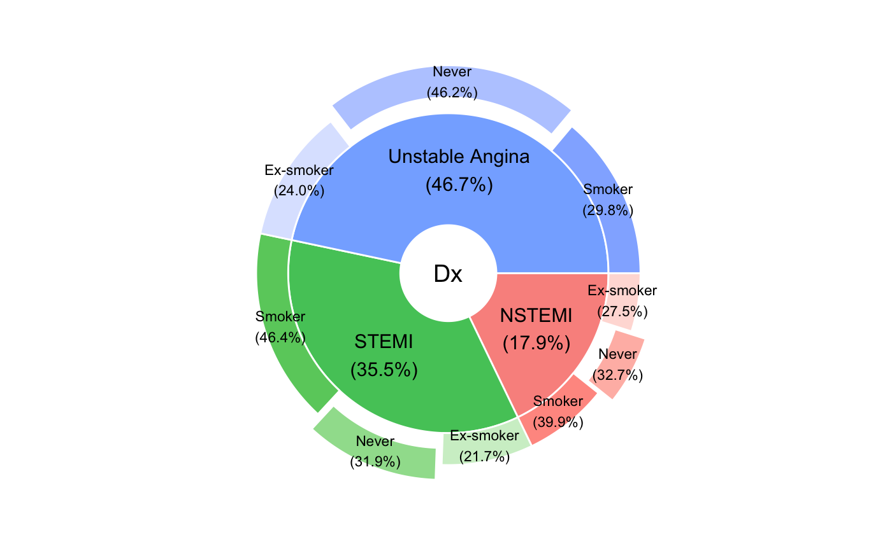#> Warning: Ignoring unknown aesthetics: explode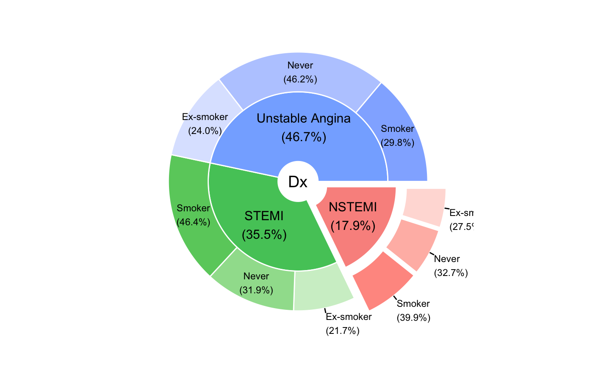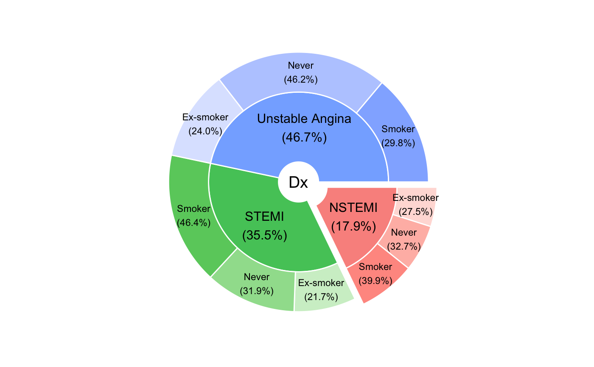#> Warning: Ignoring unknown aesthetics: explode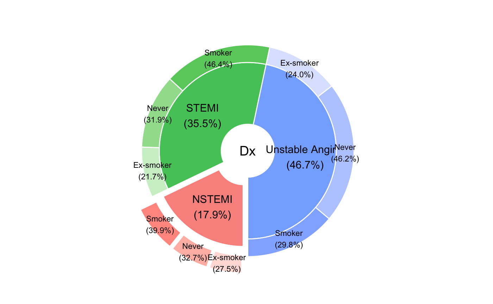require(dplyr)#>#> #>#> #> #>#> #> #>df=mtcars %>% group_by(gear,carb) %>% summarize(n=n()) PieDonut(df,aes(pies=gear,donuts=carb,count=n),ratioByGroup=FALSE)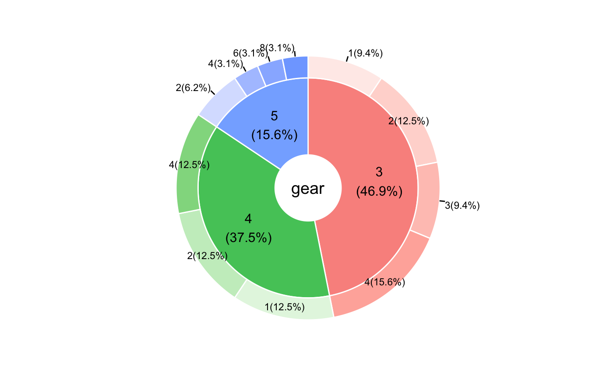